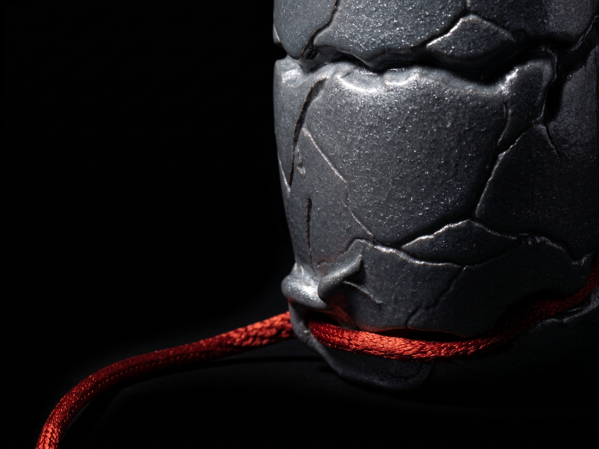

L'archetipo del legame primordiale. Non celebra l'amore ideale, ma la forza brutale di ricucire le crepe e abitare le distanze imperfette. Richiede l'intervento manuale per chiudere il patto nello spazio fisico.
MATERIA: Totem SLS, Cotone grezzo, Ceralacca scarlatta.
INNESCO: Patto di Pietra e Filo.
BIO-FEEDBACK: Attivo.
INNESCO: Patto di Pietra e Filo.
BIO-FEEDBACK: Attivo.
